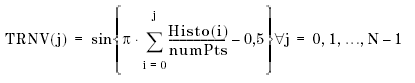

INL and DNL (Sine Wave selected)
In ADC tests you can test Integral Non-Linearity and Differential Non-Linearity by applying a sine wave.
The digital waveform of your ADC is captured. An histogram is automatically calculated and stored. This histogram is needed for the ADC linearity calculations. The histogram X-axis is the output code of the ADC and the y-axis shows how often that code occurred.
In a next step the transition voltages are calculated with the following formula:

N is the total number of bins, Histo(i) is the number of codes in bin i, numPts is the number of points captured.
That way the captured digital sine wave is translated to a ramp. INL and DNL of this ramp can now be calculated with the same formulas as INL and DNL in a DAC test.
See also Differential Non-Linearity (DNL) and Integral Non-Linearity (INL) for a DAC test.